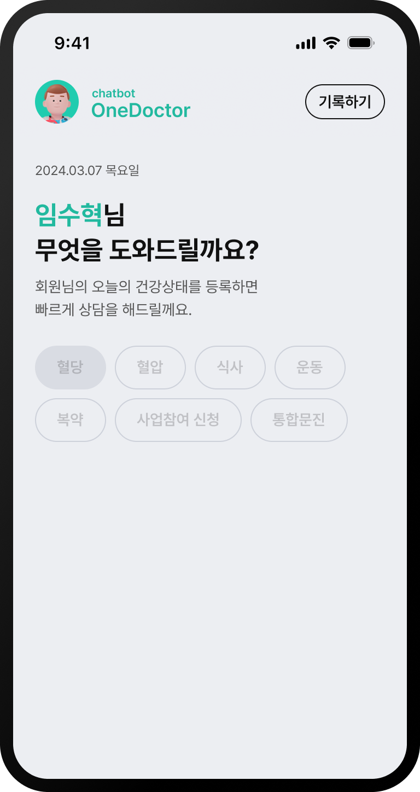
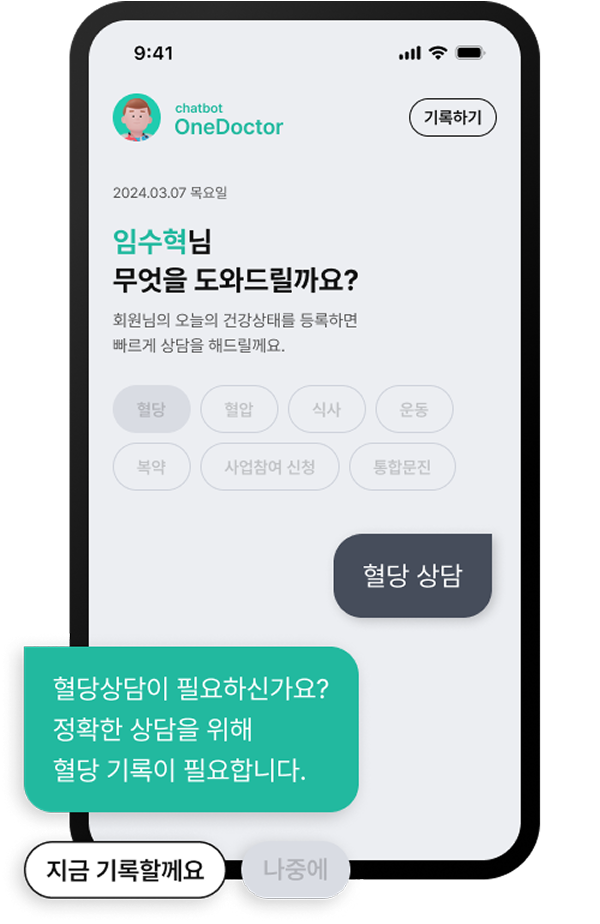
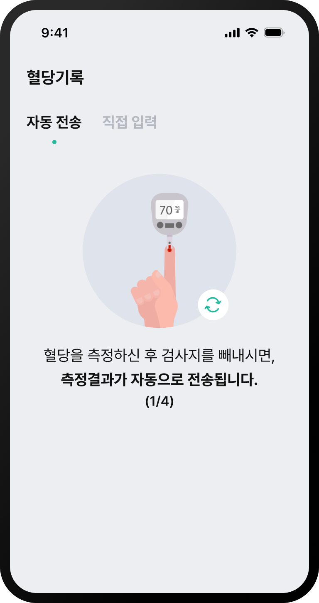
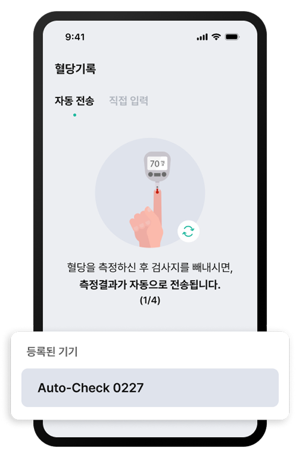
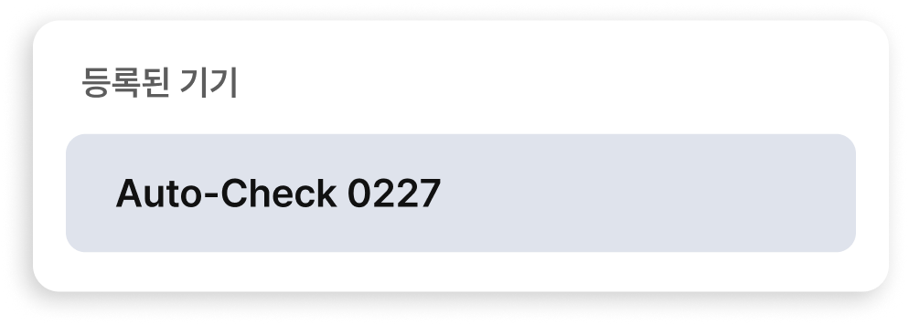
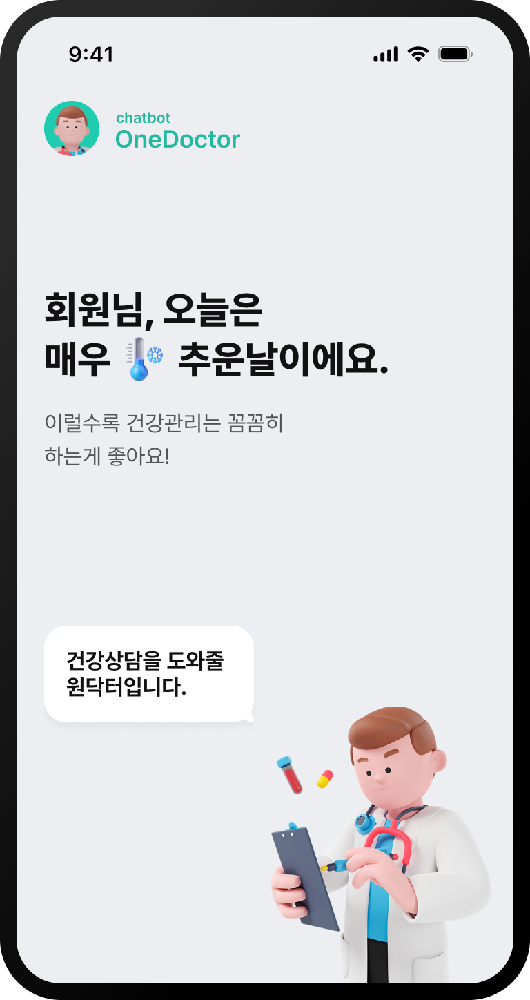
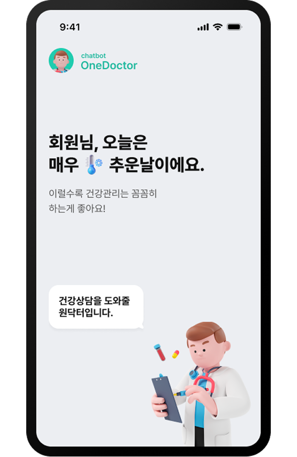

채팅 UI를 활용한
친근감 형성
사용자가 건강기록을 입력하면 의료 전문가와 직접 상담하는듯한
답변이 제공됩니다.
버튼을 선택함으로써 사용자가 번거로운 타이핑 작업을 하지 않아도
자연스러운 플로우가 진행됩니다.


등록된 디바이스와의
자동 호환
사용자가 현재 사용하고 있는 혈압계 · 혈당계를 원닥터 앱과
동기화시켜 직접 입력할 필요 없이 블루투스를 이용한 자동 전송
기능을 활용하여
누구나 쉽게 건강기록 관리가 가능합니다.



친절하고 따뜻한
UX라이팅
의사선생님과 직접 소통하는듯이
친절하고 따뜻한 말투의 통일된 UX
라이팅을
사용하여 사용자에게
친근감있게 다가갑니다.

